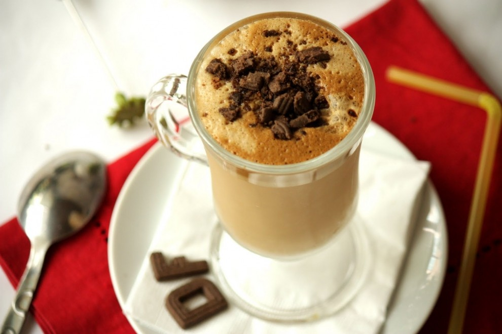
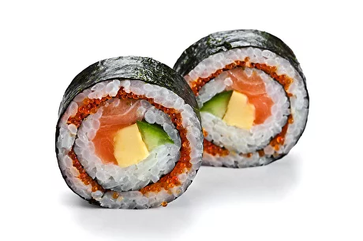
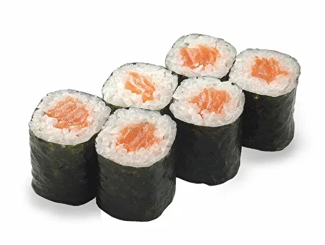

|  |
Фраппе сушиФраппе суши - это изысканный вид суши, который включает в себя свежий и нежный лосось, тунец или другие виды рыбы, нарезанные тонкими полосками и уложенные на ломтике риса. Верхний слой рыбы обычно украшается узорами и декоративными элементами. Фраппе суши подают с соевым соусом и имеет изысканный вкус и внешний вид. |
|  |
Футомаки сушиФутомаки суши - это крупные роллы суши, обычно завернутые в водоросль нори с рисом и разнообразными начинками, такими как рыба, овощи, авокадо, крабовое мясо и многие другие ингредиенты. Они могут быть гарнированы кунжутом, масаго (икрой), и другими украшениями. Футомаки суши имеют разнообразные сочетания вкусов и текстур в каждом куске. |
|  |
Хосомаки сушиХосомаки суши - это тонкие роллы суши, обычно состоящие из одного типа начинки, такой как рыба, огурец, авокадо или японские омлеты, завёрнутые в водоросль нори с рисом. Они обычно компактные и легкие в приготовлении, и могут быть идеальными для тех, кто предпочитает более простые и нежные вкусы. |